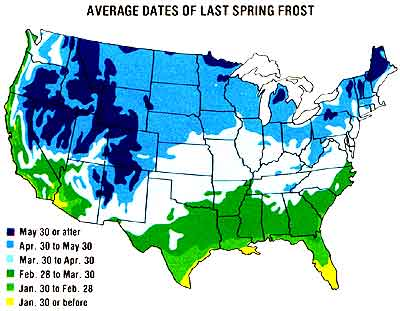
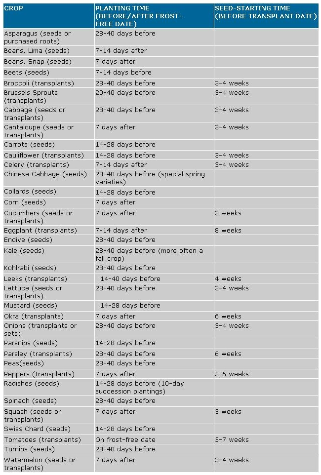

The still-timid sunshine kneads the frozen soil with ever-strengthening fingers, and March's cool gray showers turn gardens into glistening swamps of chilled mud. Restrain your sowing impatience until the earth is ready . . . then prepare a rich bed to receive the seeds and host yet another performance of Mother Nature's annual miracle.
Here's an all-purpose timetable for planting your 1982 garden, based on the actual frost-free date for your locality. A local weather bureau should be able to tell you when that is . . . or you can easily calculate it by adding about 14 or 21 days to the average date of the last frost in your vicinity, as indicated by the accompanying chart. Add 14
days if your growing ground has good air drainage and is usually as warm as-or warmer than-its surroundings . . . and 21 days if your garden tends to be a frost trap or is in a colder-thannormal area.
|
 |
 |
|